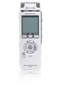

Last Modified: December 10, 2011
Contents: Basics; Food For Thought; Maintaining A Contact; DX Notes; Q Signals; Mobile CW; Odds & Ends;
Never use a foreign phrase, a scientific word, or a jargon word if you can think of an everyday English equivalent. George Orwell
I've been operating HF mobile since 1972, from both company and personal vehicles. I've driven well over a million and a half miles, and worn out a few vehicles in the mean time. I know what my country, county, and grid square counts are, and I've even worked Heard Island a few times (about as far from the US as you can get). One thing is for sure, there is no mean distance for the average contact.
I've had contacts which lasted all of 2 minutes, but seemed like an eternity at the time (keep reading, and you'll know why). I once drove from Ely, Nevada to Denver, Colorado, and spoke with the same station the whole way (12+ hours). I can't speak for others, but I'd guess my average contact length is about 20 minutes. It is a little shorter these days, as you can drive from one end of Roswell, to the other in about 15 minutes, on a bad day yet! It isn't until I take a trip that they get longer, but not by much.
There is one thing I haven't a clue about, and that's the total number of mobile contacts I've had. When you were required to keep a log book, I filled about 20 of them (≈15,000). But this really isn't about me. Rather, it is a few operating tricks I've learned which might help others to get, and maintain, mobile contacts.
What follows aren't panaceas for everyone, as each of us have our own operating style. Whether you follow or forget them, chide or agree, is up to you. That said, if you see yourself in some of what's proffered here, you might want to think twice before you dismiss them carte blanche.
Your average mobile station will have an effective radiated power considerably less than just about any base station except a QRP operation. As a result, just because you can easily copy the other station, doesn't mean he can copy you just as well. Chances are he can't, especially if you're using a minimal antenna system. It is, after all, easier to make up receive losses than it is transmission losses. So, you have three choices; Either answer just the stronger stations, call CQ a lot, or do a lot of listening.
It pays to listen! In fact, it pays to listen a whole lot! If you do, it won't take long before you discover the difference between a casual contact, and a personal one between close friends. Once you do, here's some sage advice.
•Do not break in to a personal contact unless it is an emergency, or you know all of the parties!
•Do not break in to a personal contact (even a round table) if you can't hear all of the parties!
•Don't use the word break! That is, unless it is an emergency.
•If you just have to interrupt an on-going contact, just wait for a turnaround, and simply use your call, or say contact, and nothing more!
•If you need (want really) a signal report, or an antenna check, then call CQ.
•Before calling CQ, ask if the frequency is clear, twice! And do it in plain language. Using QRZ the frequency is an incorrect use therein.
•Using overly trite, and repetitive Q or NASA signals like QSL and Roger That will quickly label you a LID, and shorten up any contact, except those with another LID!
And remember this: It is always best to set the example, rather than being one!
Once you make a contact, it won't last long unless you follow a few, simple suggestions. One of those is, don't mention that you're mobile. After all, there is no express law (nowadays) requiring you to mention that you're mobile. If you operate enough, you'll discover that telling folks you're mobile shortens up the contact rather quickly.
Of course, in order to get by with the ruse, you need to make sure you have your operating parameters (low mic gain, no compression) set correctly, and that you know how to use your microphone correctly as well. Doing so keeps the transmitted ambient background level low, and chances are the other station won't be able to tell you're mobile. Speaking of compression, using it mobile is a sure-fire way for others to know you're on the road. My advice, don't! Ever!

 You can use speech clipping to increase your average power, however, there are a couple of caveats. First, some vehicle electrical systems are already taxed, especially in inclement weather (wipers, lights, heater, etc. all on). Since clipping can increase the average talk power by as much as 6 dB, the resulting extra load on the electrical system can cause low voltage problems. This fact is exacerbated when running high power. And, although clippers don't compress the speech per sé, if their respective input and output gain controls aren't set correctly, they can distort the speech in the same manner as compression. As with any form of speech compression, moderation is the key to success. Incidentally, there is more information on the LogiKlipper here.
You can use speech clipping to increase your average power, however, there are a couple of caveats. First, some vehicle electrical systems are already taxed, especially in inclement weather (wipers, lights, heater, etc. all on). Since clipping can increase the average talk power by as much as 6 dB, the resulting extra load on the electrical system can cause low voltage problems. This fact is exacerbated when running high power. And, although clippers don't compress the speech per sé, if their respective input and output gain controls aren't set correctly, they can distort the speech in the same manner as compression. As with any form of speech compression, moderation is the key to success. Incidentally, there is more information on the LogiKlipper here.
Learn what the FCC rules are about identifying. Constantly giving your call on every turnaround is a waste of time. Just using over, or back to you should be sufficient until the proverbial 10 minutes is up. Then, only your call is necessary. And you don't have to use phonetics each time either. Oh! And don't forget, using QSL after every turn around is a classic sign of a LID.
Don't shout! Within the confines of an average vehicle, the ambient noise level is many times higher than your average living room. Add in a little reflected speech, and most operators will switch to full-shout mode. Adding great insult (as I alluded to above), most operators use way too much mic gain, and intelligibility drops to near zero. If you're one of these guys, here's a suggestion. Buy a decent headset, and turn on your monitor function. The instant feedback (sidetone) will typically keep you on an even keel.
 Most jurisdictions do not allow the use of headsets which cover both ears, and some disallow any headset configuration, period! Before using any headset, make sure you know what the local laws allow. And, if you travel, error on the side of no headset usage.
Most jurisdictions do not allow the use of headsets which cover both ears, and some disallow any headset configuration, period! Before using any headset, make sure you know what the local laws allow. And, if you travel, error on the side of no headset usage.
Broaden your horizons. If you listen as I suggested above, it won't take you long to get tired of the same old rhetoric. If all you can talk about is the weather, or your lumbago, your contacts will be short. Personally, I refrain from politics, sports, religion, sex, or any other hotly-debated topic, especially bigotry! And I don't use four letter words either.
As alluded to above, drop the unnecessary CB-esque jargon. I recently listened to two, obviously, newly-licensed amateurs having a short chat. On every turnaround, one of them used this exact phraseology; QSL-QSL-QSL, Roger That, Roger That! While some folks will tolerate it, most old timers won't, and that includes me! When someone does this to me personally, I've always just reached my destination, and I sign off! While I'm on the subject; there is no such word as destinated!
Watch what you use for phonetics. Constantly hearing some trite phraseology for your call can get old very quickly. Admittedly, some are rather clever, but that fact along doesn't justify their use. Most knowledgeable operators prefer the ICAO alphabet, and for good reason. It was designed to prevent ambiguity caused by accents in the airline industry's official English language requirement. Incidentally, this is the exact reasoning contrary-pundits use to justify (incorrectly) their trite phraseology. If you're ever on the receiving end of a pileup, you'll discover for yourself why the ICAO is superior.
If you want to work DX, it pays to listen... a lot! The way band conditions are these days, propagation can change very rapidly. Obviously, calling when the DX station is strong is advantageous when other areas of the country might have weaker signals. Propagation doesn't always work that way, unfortunately.
If the DX station is working call areas, you actually have less of a chance of breaking a pileup than you do otherwise. Again, this is a propagation issue. This doesn't keep you from trying, however.
 Sometimes, DX stations will call for mobiles (something I'd wished they'd all do). I'd also wish they wouldn't use splits when working mobiles, as mobile operation is already distracting enough. Fact is, I often send e-mails to up-coming DX-pedition headquarters with that suggestion, and a few times it has worked. If they're working splits, and I really want the contact, I find a safe place to park.
Sometimes, DX stations will call for mobiles (something I'd wished they'd all do). I'd also wish they wouldn't use splits when working mobiles, as mobile operation is already distracting enough. Fact is, I often send e-mails to up-coming DX-pedition headquarters with that suggestion, and a few times it has worked. If they're working splits, and I really want the contact, I find a safe place to park.
I've had DX stations put me in their log as a 1x3 because they've mistaken the mobile designation as part of my call sign. To avoid this, I suffix my call with mobile-in-motion, rather than just mobile. And, I always tell them I'm mobile in motion when I give them a signal report. Doesn't always work (K5D operation is an example), but at least I tried to avoid the confusion.
Logging any mobile contact while underway is a difficult undertaking if you don't have a ride-along (second op, spouse, XYL, etc.). To overcome this, I purchased a small digital recorder. The one pictured is an Olympus® DS40 which sells for about $130, or about $1 per hour of recording time. You can buy similar one with 8 hours of good-quality recording for under $30 at Target®. Once you're parked, it is easy to transcribe the contacts into a log book.
If you're operating portable or stationary, here is a site where you can purchase logging software for your PDA called MobileLog. It was written by Pat Rundall, NØHR, and sells for $29.95. There is also a 15 day free trial available. It is quite robust, and should suit any mobile or portable operation (but only while you're parked!).
There is one thing you shouldn't use DX for, and that's to rate your antenna installation. The same goes for SWR readings, as they're not an indicator of any antenna parameter, other than your transceiver will be happy. Maybe?
Q Signals, like Phillip's Codes, are nothing more than abbreviations, and they can be very useful especially if you work a lot of DX. They're both used extensively in the CW portions of the amateur bands. A complete list of Q signals are provided by the ARRL, both on-line, and in their various publications. However, their over use on the phone bands has all but negated their intended, and defined, use as I mentioned above.
It isn't the Q signals that I abhor so much, it is their bastardized shortcuts! For example, quirm (QRM), swares (SWR), quirts (QRT), 3s (73), 8s (88), and even Broderick Crawford's old Highway Patrol ten codes; what a complete turn off! And when I hear them, I turn off! The frequency that is.
In all of my years as an amateur radio operator (40+), I have never heard the frequency call anyone. Yet, you quite often hear operators spouting; QRZ the frequency, is the frequency clear? Want to know if the frequency is clear? Then just ask, as I mentioned previously.
If you really want to be known as an A-One phone operator, use plain, unadulterated (read between the lines) language, and save the Q signals for CW operation.
Readers might think I'm alone in recommending plain English, but I'm not. Here's a web site which proves my point.
 There aren't very many mobile CW operators. After all, it is a rare CW operator who can copy in his/her head (no pen and paper), remember the details, and return the call, all while driving down the interstate! I used to be able to do that, but age has forced me to rethink the scenario. Nonetheless, if you're looking for that rare one, CW is your best bet.
There aren't very many mobile CW operators. After all, it is a rare CW operator who can copy in his/her head (no pen and paper), remember the details, and return the call, all while driving down the interstate! I used to be able to do that, but age has forced me to rethink the scenario. Nonetheless, if you're looking for that rare one, CW is your best bet.
If you're not in the above class of operators, you can still work CW mobile. Either park, or let the second op or XYL drive while you operate. By the way, it still counts as a mobile contact even if you're not driving.
Here's an important consideration; few mobile transceivers do a creditable job of filtering CW. Adding insult are the ever-present RFI sources most mobiles are plagued with, including that caused by over use of a noise blanker. One piece of hardware I've personally found advantageous, is the SCAF-1 audio filter by Idiom Press. Its bandpass is adjustable from 3 kHz, down to 400 Hz, and thus usable for both phone and CW. It is a worthy addition for any mobile station.
Idiom Press also makes a CMOS keyer with four, active, built in memories, and it is the same physical size as the SCAF-1. It operates on both battery and 13.8 vdc. If your mobile transceiver doesn't have a built in keyer and memory, you might look at the CMOS4 keyer.
By the way, if you order the SCAF-1 as a kit, you can specify a SSB version. The cutoff is as sharp, but the minimum bandwidth is ≈1 kHz, which makes adjustment a little easier.
It pays to keep distractions low! Every single device you install, for whatever reason, is also one more thing you need to look at, and find room for. Obviously, some boxes are required. We might need some sort of controller if we have a remotely tuned antenna, and that may require an external box. If you run high power, you'll need some sort of box to control it, and the list goes on. However, some boxes are a waste of time and effort. A directional wattmeter for an FM radio is a good example. The point here is, what boxes you really need to operate or use while under way, should have just as much effort put into their mounting and ease of use, as the radio itself. This is one case where familiarity does not breed contempt!
I really don't consider myself an old timer, although I've been operating mobile nearly 40 years. I still try my best not to use trite, over used phrases, words, and idioms. I don't even like the term handle, or ham, so I don't use them. As I alluded to above, the way to good, solid, long-lasting contacts (and friends), is to be yourself. Think about this. If you're having dinner with your spouse, do you say QSL-QSL-QSL when she asks you to pass a condiment? I suspect not. In other words, there is nothing anti-amateur about using plain, unadulterated English.
Lastly, courtesy pays. If you're having a bad day, amateur radio isn't the place to vent, rant, or rave. And please, leave out the four letter words!
{kind=link}